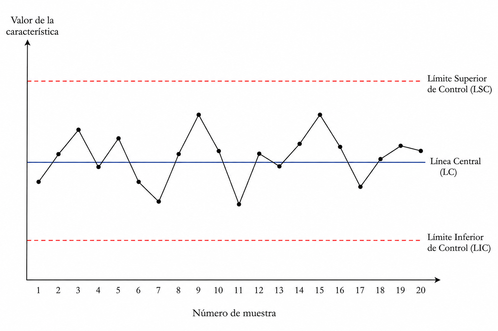
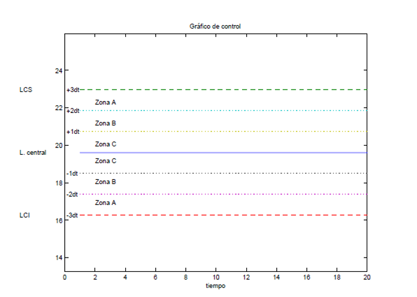
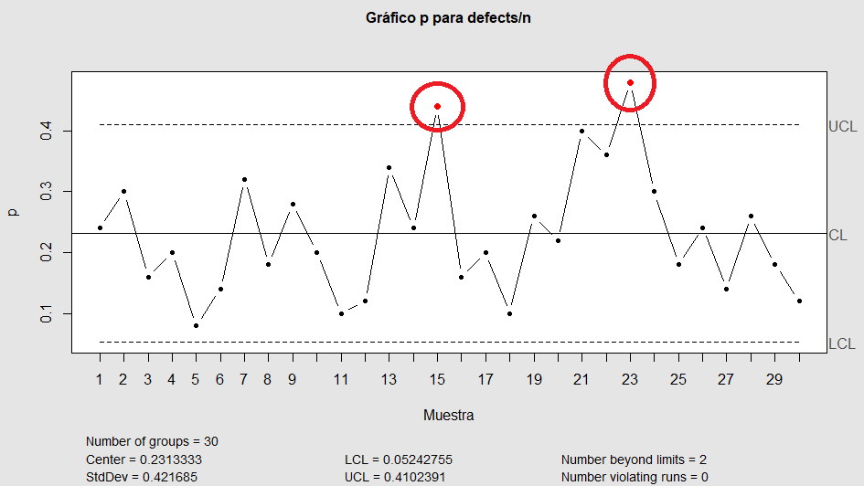
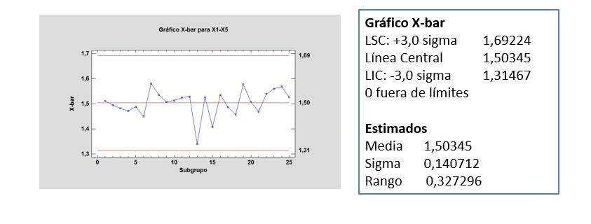
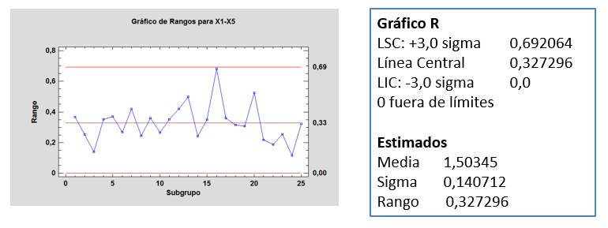
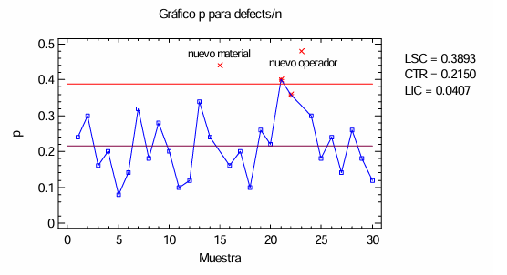
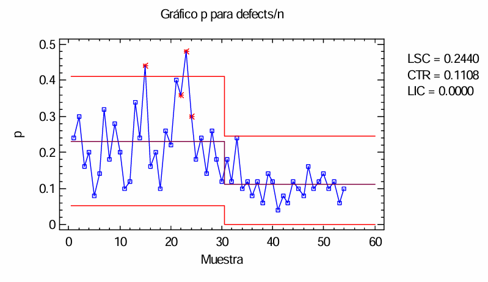
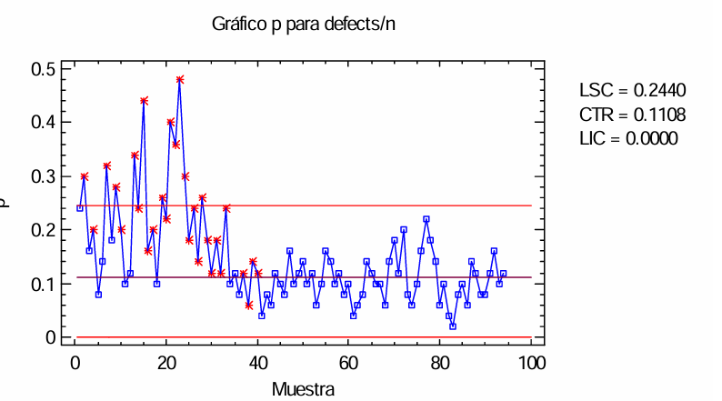

13 Calidad
13.1 Introducción al Control Estadístico de Calidad
13.1.1 Origen del control de calidad
La primera etapa del control de calidad se basa en la inspección del producto acabado. En esta fase el objetivo principal es detectar productos defectuosos una vez finalizada su fabricación, es decir, en esta etapa Calidad = Inspección.
13.1.2 Limitaciones de la inspección
La inspección total de la producción presenta importantes inconvenientes, principalmente debido a su inviabilidad en términos de coste, tiempo y recursos. La inviabilidad de inspeccionar el 100% de la producción hace imprescindible el uso de métodos estadísticos.
Desde este enfoque inicial, calidad es sinónimo de cumplir las especificaciones.
13.1.3 Control de la producción intermedia
Cuando un producto es muy complejo resulta muy costoso esperar hasta que esté terminado para comprobar si es o no aceptable. La inspección a lo largo del proceso es lo que se conoce como Control estadístico de procesos, teniendo como objetivo principal minimizar los costes de la inspección.
En esta etapa, calidad es sinónimo de reducir la variabilidad.
13.1.4 Diseño del producto
Las mejoras no se obtienen sólo por el avance tecnológico, si no como consecuencia de realizar pruebas sistemáticas y comparar resultados. La calidad no sólo se controla, si no que se diseña y se crea. En esta etapa, calidad es sinónimo de mejora. El diseño de experimentos y la extracción de conclusiones se conoce como Diseño Estadístico de Experimentos.
13.2 Control estadístico de procesos
Un proceso industrial está sometido a una serie de factores de carácter aleatorio que hacen imposible fabricar dos productos exactamente iguales. Las características del producto fabricado no son uniformes y presentan una variabilidad. Esta variabilidad es claramente indeseable y el objetivo ha de ser reducirla lo más posible o al menos mantenerla dentro de unos límites. Dado que su aplicación es en el momento de la fabricación, puede decirse que esta herramienta contribuye a la mejora de la calidad de la fabricación.
El control estadístico de procesos es la única técnica estadística aplicable durante la fabricación. Permite también aumentar el conocimiento del proceso, lo cual en algunos casos puede dar lugar a la mejora del mismo.
Cuando el proceso trabaja afectado solamente por un sistema constante de variables aleatorias no controlables (causas no asignables) se dice que está funcionando bajo control estadístico.
Cuando, además de las causas no asignables, aparece una o varias causas asignables, se dice que el proceso está fuera de control.
El control estadístico de procesos se basa en analizar la información aportada por el proceso para descubrir cuándo están actuando causas asignables para así eliminarlas del proceso. Habitualmente se realiza mediante gráficos de control. Estos se basan en la idea de que si el proceso se encuentra bajo control estadístico es posible realizar una predicción del intervalo en el que se encontrarán las características de la pieza fabricada.
13.3 Gráficos de control
Básicamente, un gráfico de control o carta de control es un gráfico en el cual se representan los valores de algún tipo de medición realizada durante el funcionamiento de un proceso continuo, y que sirve para controlar dicho proceso.
En el siguiente gráfico se observa una línea quebrada que muestra las fluctuaciones de una característica a lo largo del tiempo.

Esta es la fluctuación esperable y natural del proceso. Los valores se mueven alrededor de un valor central (el promedio de los datos), la mayor parte del tiempo cerca del mismo. En algún momento puede ocurrir que aparezca uno o más valores demasiado alejados del promedio y habrá que distinguir si es una fluctuación natural o es porque el proceso ya no está funcionando bien.
La selección de los límites de control equivale a determinar la región crítica para probar la hipótesis nula \(H_0\) de que el proceso está bajo control estadístico. Alejando dichos límites de la línea central se reduce \(\alpha\) (o probabilidad de cometer un error de tipo I: que un punto caiga fuera de los límites de control sin que haya una causa especial), si bien también se eleva con ello \(\beta\) (o riesgo de cometer un error tipo II: que un punto caiga entre dichos límites cuando el proceso se encuentra en realidad fuera de control). El uso de límites de control más estrechos hacen que el diagrama de control sea más sensible a pequeños cambios, pero ello también hace aumentar la probabilidad de que se produzcan falsas alarmas de proceso fuera de control (error de tipo II).
13.3.1 Interpretación de los gráficos de control

El proceso está fuera de control cuando existen:
- Puntos fuera de los límites.
- Tendencias o rachas: (Regla del 7): 7 puntos sucesivos a un lado u otro de la línea central del gráfico (racha).
- Patrones no aleatorios: (Periodicidades, inestabilidad, sobrestabilidad):
- Patrón 1: Un punto fuera de las líneas de control.
- Patrón 2: 2 de 3 puntos consecutivos dentro de la zona A.
- Patrón 3: 4 de 5 puntos consecutivos en la zona A o B.
- Patrón 4: 7 puntos consecutivos en la misma mitad del gráfico.
- Patrón 5: 15 puntos consecutivos en las zonas C.
- Patrón 6: 8 puntos seguidos sin caer en la zona C.
- Patrón 7: 14 puntos seguidos alternativos.
- Patrón 8: 7 puntos seguidos creciendo o decreciendo.
13.3.2 Tipos de gráficos de control
Los gráficos de control se clasifican en dos tipos:
Gráficos de control de Variables: La característica de calidad puede medirse y expresarse como un número. La característica de calidad se describe con una medida de tendencia central y una medida de dispersión. Es necesario mantener el control sobre ambas medidas.
Gráficos de control de Atributos: Juzgaremos si una unidad de producto es o no conforme si posee ciertos atributos o contando el número de defectos que aparecen en cada unidad de producto.
13.4 Gráficos de control por atributos
Se tienen los siguientes:
Gráfico P: Mide el porcentaje de unidades defectuosas en la producción.
Gráfico NP: Mide el número de unidades defectuosas en la producción.
Gráfico U: Mide el número de defectos por unidad producida.
Gráfico C: Mide el número de defectos de todas las unidades producidas.
Los gráficos P y NP se basan en el modelo probabilístico binomial:
- El proceso de producción funciona de manera estable.
- La probabilidad de que cualquier artículo no esté conforme con las especificaciones es \(p\).
- Los artículos producidos sucesivamente son independientes.
- Seleccionamos \(k\) muestras aleatorias de \(n\) artículos del producto cada una.
A veces, el interés no reside en el número de artículos defectuosos sino en el número de defectos en un artículo o unidad de medida o, en general, el número de sucesos o atributos observados por unidad de medida: Un gráfico C es un gráfico de control del número total de defectos y un gráfico U es un gráfico de control del número de defectos por unidad de inspección producida. Esta variable que se quiere controlar puede definirse como: número de sucesos en un intervalo de longitud fija y se basan en el modelo de Poisson:
- El proceso es estable
- Los sucesos ocurren de forma independiente
13.4.1 Cálculo de los límites en los gráficos de control por atributos
Los límites de cada gráfico se calculan de la siguiente forma:
Límite superior de control: \(LSC=\mu + 3\sigma\)
Límite inferior de control: \(LIC= \mu -3\sigma\)
Línea Central: \(LC\)= Promedio de la característica de interés.
donde \(\mu\) es la media de la característica de interés y \(\sigma\) la desviación típica.
13.4.1.1 Gráfico NP
Sea \(X_i\) el número de artículos defectuosos en la muestra \(i\)-ésima, entonces \(X_i \rightarrow B(n,p)\) con media \(\mu=np\) y varianza \(\sigma^2=np(1-p)\). Sustituyendo se obtienen los siguientes límites de control:
\[LC = np \quad \quad LSC = np + 3\sqrt{np(1-p)} \quad \quad LIC = np - 3\sqrt{np(1-p)}\] #### Gráfico P
Sea \(p_i\) el porcentaje de artículos defectuosos en la muestra \(i\)-ésima, \(p_i = \frac{X_i}{n} \rightarrow B(n,p)\), con lo que sustituyendo:
\[LC = p \quad \quad LSC = p + 3\sqrt{\frac{p(1-p)}{n}} \quad \quad LIC = p - 3\sqrt{\frac{p(1-p)}{n}}\] Si \(p\) es desconocida, se estima a partir de las \(k\) muestras obtenidas, tomadas cuando se considera que el proceso está bajo control.
13.4.1.2 Gráfico C
Sea \(X_i\) el número de defectos en un intervalo de longitud fija en la muestra \(i\)-ésima, entonces \(X_i \rightarrow Poisson(\lambda)\), con media \(\mu=\lambda\) y varianza \(\sigma^2 = \lambda\). Los límites de control quedan de la siguiente forma: \[LC = \lambda \quad \quad
LSC = \lambda + 3\sqrt{\lambda} \quad \quad
LIC = \lambda - 3\sqrt{\lambda}\]
13.4.1.3 Gráfico U
Si \(c_i\) es el número de defectos en la muestra \(i\)-ésima y \(n_i\) el número de unidades de medida analizadas, entonces el número de defectos por unidad de medida será \(u_i=c_i/n_i \rightarrow Poisson(\lambda*n_i/n_i)=Poisson(\lambda)\), siendo los límites de control: \[LC = \lambda \quad \quad LSC = \lambda + 3\sqrt{\lambda} \quad \quad LIC = \lambda - 3\sqrt{\lambda}\] Si \(\lambda\) es desconocida, se estima a partir de las \(k\) muestras obtenidas, tomadas cuando se considera que el proceso está bajo control.
13.4.2 Ejemplo
El siguiente gráfico representa un gráfico P construido bajo el supuesto de que los datos provienen de una distribución binomial con el parámetro \(p\) estimado en base a los datos. Se observa que hay dos puntos que se encuetran fuera de los límites de control, por lo que habrá que estudiar qué ha ocurrido en el proceso con estas dos observaciones.

13.5 Gráficos de control por variables
Se tienen los siguientes:
Gráfico X: Gráfico de control para la media.
Gráfico S: Gráficos de control para la desviación típica.
Gráfico R: Gráfico de control para el rango.
Se basan en la distribución Normal: * Se parte de \(k\) muestras. * Se calcula la media y la varianza de cada muestra. * Se calcula la media total, que es un estimador insesgado de la media poblacional * Se calcula un estimador insesgado de la desviación típica poblacional
13.5.1 Cálculo de los límites en los gráficos de control por variables
Se tienen los siguientes límites teóricos:
13.5.1.1 Gráfico X
La media \(\bar{X} \rightarrow \mathcal{N}\left(\mu, \frac{\sigma^2}{n}\right)\), con lo que:
\[LC = \hat{\mu} \quad \quad LSC = \hat{\mu}+\frac{\hat{\sigma}^2}{\sqrt{n}} \quad \quad LIC = \hat{\mu}-\frac{\hat{\sigma}^2}{\sqrt{n}}\] donde \(\hat{\mu}\) es la estimación de la media y \(\hat{\sigma}\) la estimación de la desviación típica, que puede realizarse con la desviación muestral o con el rango.
13.5.1.2 Gráfico S
Se calcula estimando la esperanza de la desviación típica \(E[S]\) y su varianza \(Var[S]\), en base a valores y coeficientes que se encuentran tabulados, siendo los límites teóricos:
\[LC = E[S] \quad \quad LSC = E[S]+3\sqrt{Var[S]} \quad \quad LIC = E[S]-3\sqrt{Var[S]}\]
13.5.1.3 Gráfico R
De igual forma que con el gráfico \(S\) se estima la esperanza del rango \(E[R]\) y su varianza \(Var[R]\) en base a coeficientes tabulados, siendo los límites teóricos: \[LC = E[R] \quad \quad LSC = E[R]+3\sqrt{Var[R]} \quad \quad LIC = E[R]-3\sqrt{Var[R]}\]
13.5.2 Ejemplo
El siguiente gráfico representa un gráfico X para la media, construido bajo el supuesto de normalidad con media y desviaciones típicas estimadas a partir de los datos. En este caso, como todos los puntos están dentro de los límites de control, el proceso estaría bajo control.

En el gráfico R se acompaña el correspondiente gráfico para la dispersión basado en el rango, donde también el proceso se encontraría bajo control.

13.6 Ejemplo aplicado
El procedimiento Gráfico P crea un gráfico de control para datos que describe la proporción de veces que ocurre un evento en \(m\) muestras tomadas de un producto o proceso. Los datos podrían representar la proporción de artículos defectuosos en un proceso de manufactura, la proporción de clientes que regresan un producto, o cualquier otro atributo que pueda ser clasificado como aceptable o inaceptable. Se resaltan las señales de fuera-de-control, incluyendo tanto puntos más allá de los límites de control como cualquier secuencia atípica en los datos. El gráfico puede construirse en modo de Estudio Inicial (Fase 1), donde los datos mismos determinan los límites de control, o en modo de Control a Estándar (Fase 2), donde los límites provienen de un estándar conocido o de datos previos.
Los datos para el estudio consisten de \(m\) muestras de una población:
\(n_j =\) número de elementos en la muestra \(j\)
\(d_j =\) número de elementos no aceptables en la muestra \(j\)
13.6.1 Datos de Ejemplo
El archivo cans.xlsx contiene resultados de la inspección de \(m = 94\) muestras tomadas de un proceso de manufactura, cada una corresponde a \(n = 50\) envases de cartón de jugo de naranja. Los datos son presentados por Montgomery (2005). Se inspeccionó cada envase y se tabuló el número de envases defectuosos.
Las primeras \(m = 30\) muestras se tomaron antes de un ajuste a la máquina. Las siguientes \(24\) muestras se emplearon para establecer los límites de control para el proceso. Las \(40\) muestras finales se graficaron usando los límites de control establecidos.
El Gráfico \(P\) contiene las proporciones muestrales \(p_i\).
En el gráfico se muestran los siguientes límites de control:
- Límite superior de control (LSC) = 0.4102
- Línea central (LC) = 0.2313
- Límite inferior de control (LIC) = 0.0524
El eje horizontal representa la muestra y el eje vertical la proporción \(p\) de defectos.
En el modo Fase 1 (Estudios Iniciales), la línea central y los límites de control se determinan a partir de los datos.
Montgomery (2005) reportó que los puntos localizados fuera de control se debieron a:
Muestra 15: nuevo material
Muestra 23: nuevo operador
Después de excluir estas dos muestras, la línea central y los límites se recalcularían, quedando el gráfico como se aprecia a continuación.

En la discusión que hace Montgomery (2005) de estos datos, establece que se hizo un ajuste a la máquina después de revisar los resultados anteriores y luego se tomaron unas 24 muestras adicionales.
Entonces se calcularán diferentes límites de control para las muestras 1-30 y 31-54. Los límites para la última sección se muestran en la siguiente gráfica en la que se observa la mejora.

A continuación realizamos una prueba de rachas eliminando las observaciones que no cumplan las reglas:
Pruebas de rachas:
Reglas:
- Secuencias arriba o abajo de la línea central con longitud 8 o mayor.
- Secuencias arriba o abajo de longitud 8 o mayor.
- Conjuntos de 5 subgrupos con al menos 4 más allá de 1.0 sigma.
- Conjuntos de 3 subgrupos con al menos 2 más allá de 2.0 sigma.
- Conjuntos de 15 subgrupos en o dentro de 1.0 sigma.
- Conjuntos de 8 subgrupos más allá de 2.0 sigma.
- Conjuntos de 8 observaciones alternando arriba y abajo
Violaciones: Observaciones 20 (G), 21 (G), 22 (DG), 23 (DG) y 24 (CG).
La discusión anterior se ocupa de un estudio Fase 1, en el cual el objetivo fue llevar al proceso a un estado de control estadístico y estimar un valor estándar para la proporción media de elementos defectuosos.Después del ajuste a la máquina, el proceso pareció estabilizarse alrededor de una proporción de p = 0.1108.
En un estudio Fase 2, se colectan datos adicionales y se grafican con límites de control basados en aquel estándar. Las filas 55-94 del archivo de datos de ejemplo representan tal caso.
El último gráfico muestra como el proceso ya ha permanecido bajo control durante en periodo en que se recolectaron datos adicionales.
